5 UNUSUAL EXAMPLES AND CONSTRUCTIONS
5-1. A train moved in one direction for 5.5 hours. It is known that for any time interval of one hour, it traveled exactly 100 km.
- Is it true that the train moved uniformly?
- Is it true that the average speed of the train is 100 km/h?
5-2. Every month, a person recorded their income and expenses. Could it be that for any five consecutive months, their total expenses exceeded their income, but for the whole year, their income exceeded their expenses?
5-3. Is it possible to represent the number 203 as a sum of several natural numbers so that the product of all these numbers is also equal to 203?
5-4. Is the following statement true: from any six natural numbers, one can choose either three pairwise relatively prime numbers, or three numbers that have a common divisor greater than one?
5-5. Are the following statements true:
- from any five distinct numbers written in a row, one can choose some three that are in decreasing or increasing order in this row;
- from any nine distinct numbers written in a row, one can choose some four that are in decreasing or increasing order in this row?
5-6. a) The sum of several numbers is equal to 1. Can the sum of their cubes be greater than 1? b) The same question for numbers, each of which is also less than 1.
5-7. Let \(f(x)\) be a function continuous at each point of the segment [0; 1] and such that \(f(0) = f(1)\). Is it true that the graph of this function has a chord parallel to the abscissa axis:
- of length \(\frac{1}{5}\);
- of length \(\frac{2}{5}\)?
(A chord of a graph is a segment with endpoints on the graph.)
5-8. Could it be that the lengths of all sides of one triangle are less than 1 cm, the lengths of all sides of another triangle are greater than 100 m, and the area of the first triangle is greater than the area of the second?
5-9. Could it be that:
- the lengths of all three altitudes of a triangle are less than 1 cm, and its area is greater than 100 cm\(^2\);
- the lengths of all three altitudes of a triangle are greater than 2 cm, and its area is less than 2 cm\(^2\)?
5-10. Is the following statement true: for any point lying inside a convex quadrilateral, the sum of the distances from it to the vertices of the quadrilateral is less than its perimeter?
5-11. Is it possible to cut an isosceles right triangle into several triangles similar to it so that there are no equal triangles among them?
5-12. Is it possible to construct a rigid spatial structure from three rods and several threads so that the rods do not touch each other but are only connected by threads attached to their ends?
5-13. Is it possible to make a hole in a wooden cube through which the same cube can be passed?
5-14. Does there exist a polyhedron (not necessarily convex) that has the same number of edges, vertices, and faces as a cube, but does not have any quadrilateral faces?
5-15. Is it possible to arrange six points on a plane and connect them with non-intersecting segments so that each point is connected to exactly:
- three;
- four other points?
5-16. Does there exist a closed polygonal chain that intersects each of its links exactly once and consists of:
- 6 links;
- 7 links?
5-17. There are many identical round coins. Is it possible to arrange on a plane:
- 24;
- 25 of them so that each touches three others?
5-18. It is known about a certain company that any two people who do not know each other have exactly two common acquaintances, and any two acquaintances do not have common acquaintances. Can such a company have more than four people?
5-19. Three friends played several games of chess, and each pair played the same number of games with each other. Then they began to decide which of them was the winner. The first said: “I have more wins than each of you.” The second said: “I have fewer losses than each of you.” The third remained silent, but when the points were counted, it turned out that the third had scored the most points. Could this have happened? (Points were calculated as follows: win - 1 point, draw - 1/2 point, loss - 0 points.)
5-20. Is it possible to complete the 4 × 4 table (Fig. 53) with the letters B, 3, M, and Ш1, enclose them in frames of four types (square, rhombus, triangle, and circle), and color them in four colors so that all the following conditions are met simultaneously:
- each row and each column must contain all letters, all colors, and all types of frames;
- each letter must be colored once with each color;
- each type of frame must contain each letter and each color once?
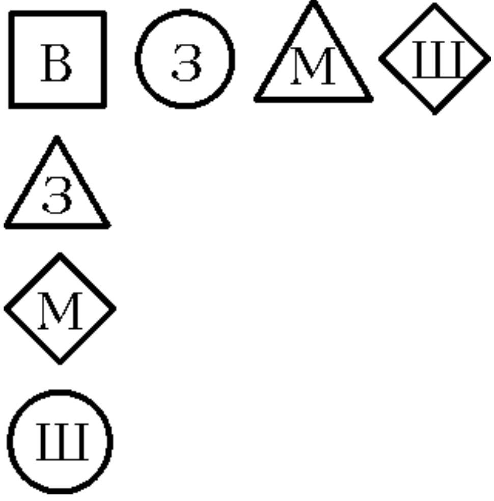
5-21. After each lesson, several members of the math club (not one and not all together) go to the ice cream cafe. At the same time, a strict rule applies in the club: after each visit to the cafe, no two participants of this visit eat ice cream together anymore. At the last lesson, it turned out that now the members of the club can only eat ice cream alone.
- How many club lessons could there have been if there are 4 members? (Give all possible answers.)
- Make a schedule of 7 visits to the ice cream cafe if there are 7 members in the club.
5.1 Problems Discussion
Problem 5-1. a), b). Answer: the train could move non-uniformly, and its average speed is not necessarily equal to 100 km/h. Let’s show this. Let’s divide the entire train travel time into 11 half-hour intervals. Let the train move exactly the same way as in the first half-hour during each odd half-hour, and cover k km during each such half-hour (0 ≤ k ≤ 100), and during each even half-hour, let it move exactly the same way as in the second half-hour, and cover (100−k) km during each even half-hour. Then, no matter how the train moves during the first two half-hours - uniformly or not - the train will cover exactly 100 km during each hour of movement.
To answer question b), let’s find the average speed of the train. The distance traveled by the train during all odd half-hour intervals is equal to 6k, and the distance covered during all even intervals is equal to 5(100−k). Thus, during the entire 5.5 hours of movement, the train covered 6k + 5(100 − k) = 500 + k. Therefore, its average speed is equal to \(\frac{500 + k}{5.5}\) (km/h). For k ≠ 50, this speed is not equal to 100 km/h.
∇ In our example, the train’s movement was periodic with a period T = 1 hour. It can be shown that such periodicity of the speed of movement follows from the conditions of the problem. From our reasoning, it can be seen that the average speed of the train can be any number in the interval from 1000/11 (when k = 0) to 1200/11 (when k = 100) km/h.
Problem 5-2. Answer: it can. Here’s an example:
2; 2; 2; 2; −9; 2; 2; 2; 2; −9; 2; 2.
Here, the differences between the person’s income and expenses (balance) for each month of the year are written in a row (taking into account the sign). We see that the sum of any five consecutive numbers in the written chain is negative (equal to −1), and in general, for the year, the sum of all numbers is positive (equal to 2).
∇ Generalization of this problem: n numbers are written in a row, while the sum of any k adjacent numbers is negative; can the sum of all n numbers be positive in such a situation? The answer here is: if n is a multiple of k, then this cannot be, and if n is not divisible by k, then it can. In our problem, n = 12, k = 5.
This statement can, in turn, also be generalized. Let m numbers be written in a row. Let’s call the sum of q consecutive numbers from this row a q-sum. Then if for natural numbers m, n, and k the inequality \(m \le n + k − d − 1\) is satisfied, where \(d = gcd(n, k)\) is the greatest common divisor of the numbers n and k, then it is possible to write m numbers in a row so that all its n-sums have one sign, and all k-sums have another sign. Moreover, all these sums can take any pre-specified values.
In fact, let’s compose a system of k + n − 2d linear equations with k + n − d − 1 unknowns:
\(x_1 + ... + x_n = a_1,\) \(x_2 + ... + x_{n+1} = a_2,\) … \(x_{k-d} + ... + x_{k+n-d-1} = a_{k-d},\) \(x_1 + ... + x_k = b_1,\) \(x_2 + ... + x_{k+1} = b_2,\) … \(x_{n-d} + ... + x_{k+n-d-1} = b_{n-d}.\)
It can be shown that this system is consistent: its matrix has the maximum possible rank k + n − 2d. If the numbers n and k are relatively prime (d = 1), then it has a unique solution; if d > 1, then the system has d − 1 free unknowns.
Thus, for given n and k, one can find a row of n + k − d − 1 numbers that satisfy the condition. If \(m \le n + k − d − 1\), then the row formed by the first m numbers of the already written row also satisfies the condition.
Let’s now show that if \(m \ge n + k − d\), then there is no such row of m numbers that all its n-sums have one sign, and all k-sums have another.
Suppose, on the contrary, that such a row of n + k − d numbers has been found, and let n > k. Let’s cross out the first k numbers. Then, in the row of the remaining n − d numbers, all k-sums still have the same sign, and all (n − k)-sums have a different sign. Since
n − d = (n − k) + k − d,
we have moved from the problem with parameters n and k to the problem with smaller numbers: k and n − k. Repeating this procedure (similar to the Euclidean algorithm), we will arrive at a situation where there is a row of numbers in which all d-sums have one sign, and all ld-sums have a different sign, which is obviously impossible. (Note that by a similar procedure – descent from (n, k) to (k, n − k), similar to the Euclidean algorithm, one can also prove the consistency of the system written above.)
Finally, it is clear that if there is no row of n + k − d numbers that satisfies the condition, then it is impossible to write a longer such row.
Problem 5-3. Answer: it is possible. Indeed:
\(203 = 7 + 29 + 1 + 1 + 1 + ... + 1 = 7 \cdot 29 \cdot 1 \cdot 1 \cdot ... \cdot 1.\) 167 ones 167 ones
∇ Let’s ask the question: which natural numbers cannot be represented simultaneously as a sum and as a product of several (the same) natural numbers?
The answer to this question is: prime numbers.
The following question related to problem 5-3 is also interesting: for which natural values of k does the equation
\(x_1 + x_2 + ... + x_k = x_1 \cdot x_2 \cdot ... \cdot x_k\)
have a non-zero integer solution?
It turns out that for all values of \(k\). For example:
for \(k = 1\): \(x_1 = 1\); for \(k = 2\): \(x_1 = x_2 = 2\); for \(k > 2\): \(x_1 = x_2 = ... = x_{k-2} = 1\), \(x_{k-1} = 2\), \(x_k = k\) (see [109], problems 186–189).
Problem 5-4. Answer: false.
Counterexample: 6, 10, 15, 77, 91, 143.
From these six numbers, \(2 \cdot 3\), \(2 \cdot 5\), \(3 \cdot 5\), \(7 \cdot 11\), \(7 \cdot 13\), \(11 \cdot 13\), no three have a common prime factor, but two out of every three are included in the first or second triple and therefore are not relatively prime.
This is clearly seen in the diagram – see Figure 54. Each vertex of the triangle has one of the numbers, and each side has a common factor of the numbers at its ends.
∇ If you add one more word to the condition of the problem, the statement will become true: from any six natural numbers, you can choose either three pairwise relatively prime numbers, or three numbers that pairwise have a common divisor greater than one.
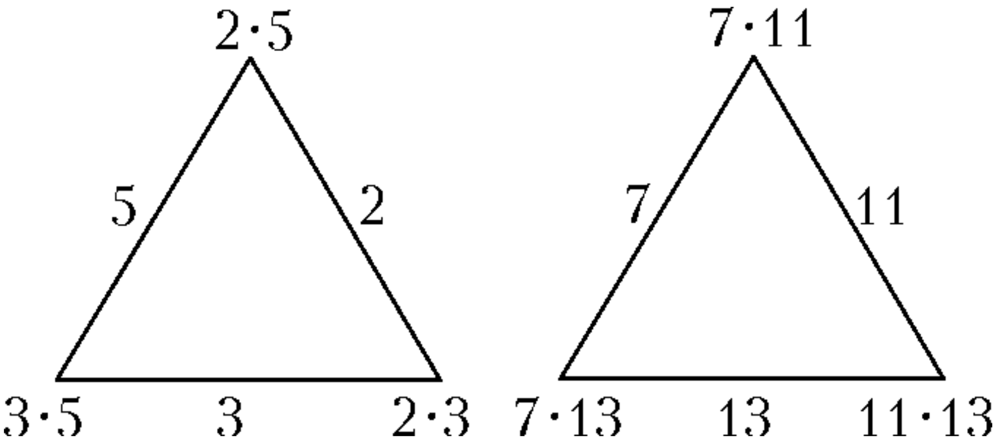
For connoisseurs, this problem will undoubtedly remind you of this: among six people, you can always choose three pairwise acquaintances or three pairwise strangers.
Problem 5-5. a) Answer: true.
Let \(a\) and \(b\) be the largest and smallest of the written numbers. If there is a number between them, then the statement is true. If they are next to each other, then there are two more numbers either to the right or to the left of them. They form the desired triple of numbers either with the number \(a\) or with the number \(b\).
For connoisseurs. There is a general theorem on this subject: in a partially ordered set consisting of \(mn + 1\) elements, there will always be either a chain of length \(m + 1\) or \(n + 1\) pairwise incomparable elements (this theorem is a consequence of the well-known Dilworth’s theorem: in a partially ordered set, the minimum number of chains containing all elements of the set is equal to the maximum number of pairwise incomparable elements).
When considering five numbers, they can be ordered like this. We will assume that for the numbers \(a\) and \(b\), the relation \(a \prec b\) holds if \(a\) is less than \(b\) and the number \(a\) is to the left of the number \(b\) in the written row. The numbers \(c\) and \(d\) turn out to be incomparable in this sense if and only if they are in decreasing order in the written row.
Since \(5 = 2 \cdot 2 + 1\) (\(m = n = 2\)), it follows from the formulated theorem that from five numbers, there will always be three that go either in increasing order (chain of length \(m + 1 = 3\)) or in decreasing order (\(n + 1 = 3\) pairwise incomparable elements). If in the formulated
- Answer: false.
Let’s give a counterexample – nine numbers: 3, 2, 1, 6, 5, 4, 9, 8, 7.
Let’s prove that no four digits in this sequence are in either ascending or descending order. To do this, we divide the members of the sequence into three triples: 321, 654, 987.
If any two digits out of these nine are in decreasing order (the one that is smaller is further from the beginning of the sequence), then they are necessarily from the same triple. This means that you cannot choose more than three digits in decreasing order, since all these digits must be in the same triple.
If any two digits out of these nine are in ascending order, then they are necessarily from different triples. Since there are only three triples, you cannot choose more than three digits in ascending order.
Problem 5-6. a) Answer: it can.
Example – two numbers, 2 and −1: \(2 + (-1) = 1\); \(2^3 + (-1)^3 = 7 > 1\).
- Answer: it can.
Example – eight numbers: two numbers, each of which is equal to 0.8, and six numbers, each of which is equal to -0.1:
\(2 \cdot 0.8 + 6 \cdot (-0.1) = 1\); \((0.8)^3 + 6 \cdot (-0.1)^3 = 1.018 > 1\).
For connoisseurs. This idea – adding many negative numbers to positive numbers, but smaller in magnitude – helps to answer the following question: can the series \(\sum_{n=1}^{\infty} a_n\) converge, and the series of cubes \(\sum_{n=1}^{\infty} a_n^3\) diverge? The answer to this question is positive. Here’s an example:
The series
\(\left(1 - \frac{1}{2} - \frac{1}{2} \right) + \left(\frac{1}{2} - \frac{1}{4} - \frac{1}{4} \right) + ... + \left(\frac{1}{2} - \frac{1}{4} - \frac{1}{4} \right) + \left(\frac{1}{3} - \frac{1}{6} - \frac{1}{6} \right) + ...\) (*)
is constructed as follows: after the sum \(\left(1 - \frac{1}{2} - \frac{1}{2} \right)\), we put \(2^3 = 8\) sums \(\left(\frac{1}{2} - \frac{1}{4} - \frac{1}{4} \right)\), then \(3^3 = 27\) sums \(\left(\frac{1}{3} - \frac{1}{6} - \frac{1}{6} \right)\), …, then \(n^3\) sums \(\left(\frac{1}{n} - \frac{1}{2n} - \frac{1}{2n} \right)\), etc.
The specified series converges, since the sum of \(N\) of its first terms, where \(3^{1+2+3+...+n} < N \le 3^{1+2+...+n+(n+1)}\), does not exceed the number \(\frac{1}{2(n+1)}\) (it is either equal to zero or equal to \(\frac{1}{2(n+1)}\)).
The series of cubes of the terms of the series (*) diverges, since the sum of \(n^3\) terms is equal to \(\frac{3}{4}\), therefore the sum of the first \(3(1^3 + 2^3 + ... + n^3)\) terms is equal to \(\frac{3n^4}{4}\) and, therefore, grows indefinitely.
It can be proved that only for functions of the form \(f(x) = kx\) in some neighborhood of zero, the convergence of the series \(\sum_{n=1}^{\infty} a_n\) implies the convergence of the series \(\sum_{n=1}^{\infty} f(a_n)\).
Problem 5-7. a) Answer: true.
Consider the function \(y = F(x) = f\left(x + \frac{1}{5}\right) - f(x)\), defined and continuous on the segment \([0; \frac{4}{5}]\). We need to prove that there is a point \(x_0\) on this segment such that \(F(x_0) = 0\). By the definition of the function \(y = F(x)\), we have:
\(F(0) = f\left(\frac{1}{5}\right) - f(0)\), (1) \(F\left(\frac{1}{5}\right) = f\left(\frac{2}{5}\right) - f\left(\frac{1}{5}\right)\), (2) \(F\left(\frac{2}{5}\right) = f\left(\frac{3}{5}\right) - f\left(\frac{2}{5}\right)\), (3) \(F\left(\frac{3}{5}\right) = f\left(\frac{4}{5}\right) - f\left(\frac{3}{5}\right)\), (4) \(F\left(\frac{4}{5}\right) = f(1) - f\left(\frac{4}{5}\right)\). (5)
Since \(f(0) = f(1)\), by adding equalities (1)–(5) term by term, we get
\(F(0) + F\left(\frac{1}{5}\right) + F\left(\frac{2}{5}\right) + F\left(\frac{3}{5}\right) + F\left(\frac{4}{5}\right) = 0\). (*)
Equality (*) is possible only in two cases: either all five terms in its left-hand side are equal to zero – then the problem is solved, or among these terms there are numbers of different signs. Let \(F(x_1)\) and \(F(x_2)\) be numbers of different signs, where \(0 \le x_1 < x_2 \le \frac{4}{5}\). Then, due to the continuity of the function \(F(x)\), there is a number \(x_0\) (\(x_1 < x_0 < x_2\)) such that \(F(x_0) = 0\), which was required.
- Answer: false, the graph may not have such a chord.
Figure 55 shows the required example. Let’s explain how it is constructed.
Let points A and B be the ends of the segment [0; 1], point C be its midpoint, and points D and E divide it into three equal parts.
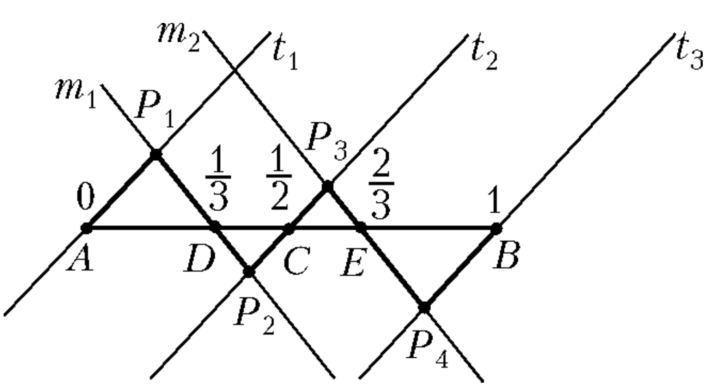
Let’s draw parallel inclined lines \(l_1\), \(l_2\), and \(l_3\) through points A, C, and B, and intersecting lines \(m_1\) and \(m_2\) through points D and E, such that \(m_1 \perp m_2\). Denoting by \(P_1\), \(P_2\), \(P_3\), and \(P_4\) the points of intersection of the lines \(l_1\), \(l_2\), and \(l_3\) with the lines \(m_1\) and \(m_2\) closest to the abscissa axis, we obtain the broken line \(AP_1DP_2CP_3EP_4B\). Let’s show that this broken line serves as the desired example.
Firstly, it is the graph of a continuous function \(f(x)\) on the segment [0; 1], and \(f(0) = f(1) = 0\).
Secondly, it does not have a chord of length 2/5 parallel to the abscissa axis. Indeed, if the ends of the chord parallel to the Ox axis lie on adjacent links of the broken line, then it obviously does not exceed the segment DE, which is equal to 1/3. If the ends of the chord lie on links “through one” or “through two”, then it is not less than the segment AC, which is equal to 1/2. Since \(\frac{1}{3} < \frac{2}{5} < \frac{1}{2}\), our statement is proved.
∇ Similar to the solution of problem 5-7 a), it can be proved that for the graph of the function \(y = f(x)\) given in its condition, there exists a chord of length \(\frac{1}{n}\), parallel to the abscissa axis (\(n\) is any natural number) – see [62].
For connoisseurs. The last statement is a special case of Levy’s theorem: if a plane continuum has a chord of length \(a\), then it has a chord of length \(\frac{1}{n} \cdot a\) (where \(n\) is an arbitrary natural number) and a chord of length \(\alpha\) parallel to it (where \(0 < \alpha < 1\)).
On the other hand, for any number \(\alpha\) (\(0 < \alpha < 1\)) that is not representable in the form \(\frac{1}{n}\) (where \(n\) is a natural number), it is possible, similarly to the solution of problem 5-7 b), to construct an example of a plane continuum that has a chord of length 1 and does not have a parallel chord of length \(\alpha\) – see [99].
Note also that for a periodic continuous function on a straight line, the situation is completely different: its graph will have a horizontal chord of any given length.
Problem 5-8. Answer: it can.
Let’s give an example. As the first one, we take an equilateral triangle with a side length of 1/2 cm, and as the second one – an isosceles triangle with a base of 200 m and a height of \(10^{-7}\) m. Its lateral side is greater than half the base, i.e., greater than 100 m, and its area is equal to \(\frac{10^{-5}}{2}\) m\(^2\) and thus less than the area of the first triangle, which is equal to \(\frac{\sqrt{3}}{16}\) cm\(^2\).
Problem 5-9. a) Answer: it can.
Let’s give an example. Consider an isosceles triangle with a base of 800 cm and a height of 0.3 cm. Its area is equal to \(\frac{800 \cdot 0.3}{2} = 120\) cm\(^2\) and thus greater than 100 cm\(^2\). Let’s show that this triangle satisfies the condition. Indeed, its height AH, dropped on the lateral side BC (Fig. 56), is equal to twice the length of the perpendicular DK, dropped from the midpoint of the base D to the lateral side BC, and this perpendicular, in turn, is less than the inclined line BD. From this it follows that the height AH is less than 0.6 cm and, therefore, all the heights of the triangle ABC are less than 1 cm.
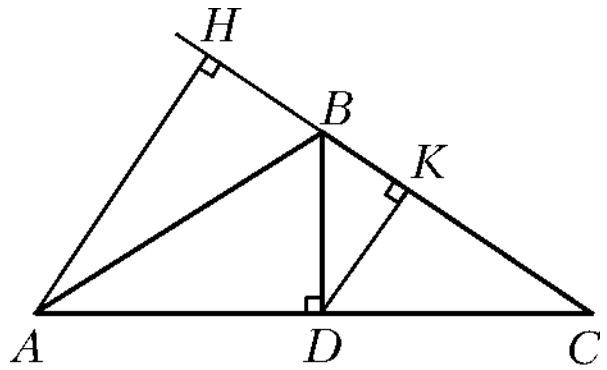
- Answer: it cannot.
Since the heights of the triangle are greater than 2 cm, its sides are also greater than 2 cm, and then its area is greater than \(\frac{1}{2} \cdot 2 \cdot 2 = 2\) (cm\(^2\)).
Problem 5-10. Answer: false.
The counterexample is shown in Figure 57. We took three vertices A, B, and D of the quadrilateral ABCD very close to each other, and the fourth vertex C and the point O inside the quadrilateral – close to each other and far from A, B, and D.
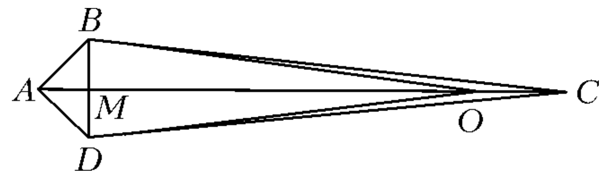
For connoisseurs. Let’s pose a more general question. For what \(k\) is the sum of the distances from any point lying inside the quadrilateral to the vertices of the quadrilateral less than \(kP\) (\(P\) – the perimeter of the quadrilateral)? Answer: for \(k \ge \frac{3}{2}\). Let’s explain why this is so.
For each quadrilateral ABCD, the point for which the sum of the distances to the vertices is maximum is one of its vertices.
Indeed, the function (on the plane) \(M \to AM\), where A is a fixed point of the plane, is convex (its graph is a cone), and the sum of four convex functions
\(f(M) = AM + BM + CM + DM\)
is also convex. The largest value of a convex function on a polygon is reached at its vertex.
Let’s now show that this largest value is less than \(kP\) (\(P\) is the perimeter of the quadrilateral). Answer: for \(k \ge \frac{3}{2}\). Let’s explain why this is so.
For each quadrilateral \(ABCD\), the point for which the sum of the distances to the vertices is maximum is one of its vertices.
Indeed, the function (on the plane) \(M \to AM\), where A is a fixed point of the plane, is convex (its graph is a cone), and the sum of four convex functions
\(f(M) = AM + BM + CM + DM\)
is also convex. The largest value of a convex function on a polygon is reached at its vertex.
Let’s now show that this largest value is less than \(\frac{3}{2}P\). Let it be achieved at vertex \(A\). Adding the inequalities \(AC < AB + BC\) and \(AC < AD + DC\) term by term, we get \(2|AC| < P\), and even more so,
\(2AC < P + 2(BC + CD)\).
Adding the sum \(2AB + 2AD\) to both sides of the last inequality, we obtain the required inequality
\(AB + AC + AD < \frac{3}{2}P\)
(see [24]).
For any \(k < \frac{3}{2}\) it is possible to construct a counterexample by setting \(MA = MB = MD = CO = \epsilon\), where \(\epsilon\) is a sufficiently small number (see Figure 57).
Note also that to find the point inside a given convex quadrilateral with the smallest sum of distances to the vertices, you do not need to be a great expert: this is the point of intersection of its diagonals.
Problem 5-11. Answer: it is possible.
Figure 58 shows how to cut a right-angled isosceles triangle with a leg length of 7 cm into 6 pairwise different right-angled isosceles triangles.
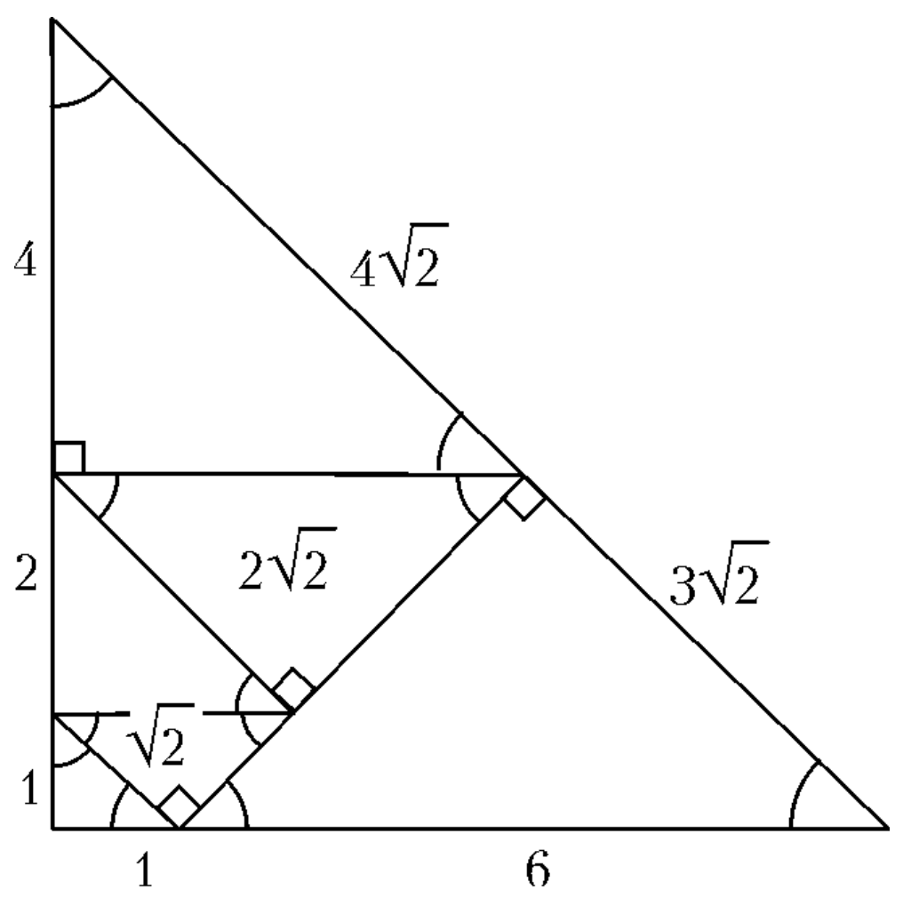
∇ It turns out that the following statement is true: a right-angled isosceles triangle can be cut into any number greater than 10 of pairwise unequal right-angled isosceles triangles.
First, let’s show how you can cut it into any even number of parts \(2k\), where \(k \ge 3\). We will start from a right-angled isosceles triangle \(ABC\) with a right angle \(C\). Let’s extend its legs \(CA\) and \(CB\) and draw a line \(l\) through the vertex \(B\) perpendicular to the hypotenuse – see Figure 59.
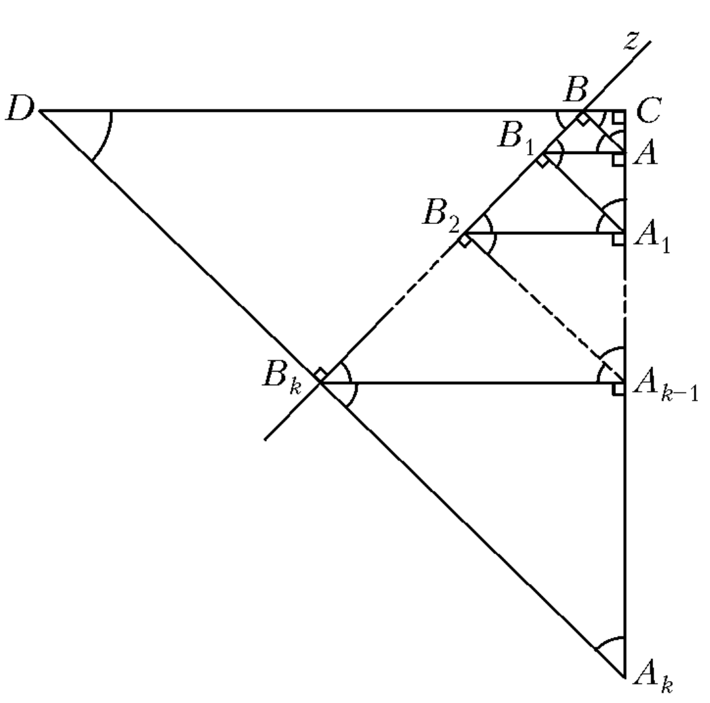
Let’s construct a broken line \(AB_1A_1B_2A_2B_3...B_kA_k\), all links \(B_iA_i\) of which are parallel to the line \(AB\), and all links \(A_iB_{i+1}\) are parallel to the line \(BC\); through the last link \(B_kA_k\) of the broken line, we draw a line that will intersect the line \(BC\) at some point \(D\). As a result, we will arrive, as is easy to show, at a right-angled isosceles triangle \(DCA\), divided in the required way into \(2k + 2\) similar pairwise unequal right-angled isosceles triangles (a special case of this construction for \(k = 2\) is used in the solution of problem 5-11). In the chain of triangles \(ABC\), \(BAB_1\), \(A_1BA_1\), \(A_1BB_2\), \(B_2AA_2\), …, \(A_{k-1}B_kA_k\), each subsequent triangle is similar to the previous one with a similarity coefficient of \(\sqrt{2}\) (the hypotenuse of the previous triangle is equal to the leg of the next one), therefore, in the sequence of segments \(CA\), \(AA_1\), \(A_1A_2\), …, \(A_{k-1}A_k\), each subsequent one is twice as long as the previous one. From this follows a practical way of cutting a given triangle in the required way.
Let it be required to divide a right-angled isosceles triangle with a leg \(a\) into \(2k + 2\) parts. Let’s set aside segments of length \(\frac{a}{2^{k-1}}\), \(\frac{2a}{2^{k-1}}\), \(\frac{4a}{2^{k-1}}\), …, \(\frac{2^{k-1}a}{2^{k-1}}\) sequentially from the vertex of the right angle on the leg (since \(1 + 2 + ... + 2^{k-1} = 2^k - 1\), this can be done); the obtained points will be the vertices \(A_1\), \(A_2\), \(A_3\), …, \(A_k\) of the broken line of the construction described above.
So, you can cut the triangle into \(2k\) parts for \(k \ge 3\).
Since the smaller of the triangles obtained in this way can again be cut into 6 parts in the way indicated above, we can cut the original triangle into \(2k + 5l\) parts, where \(k\) is any integer greater than 3, and \(l\) is any natural number. In our construction, the ends of the rods form two equilateral triangles, located in planes perpendicular to the line connecting their centers and rotated by a certain angle relative to each other. The rods themselves lie on pairwise intersecting lines.
∇ The connection of rods and threads in Figure 60 is the same as that of an octahedron (it forms the graph of an octahedron – see Fig. 67 for problem 5-15). It is difficult to mathematically prove the existence of such a construction (sufficiency of the condition \(d = l \sqrt{1 + \frac{k^2}{3}}\)).
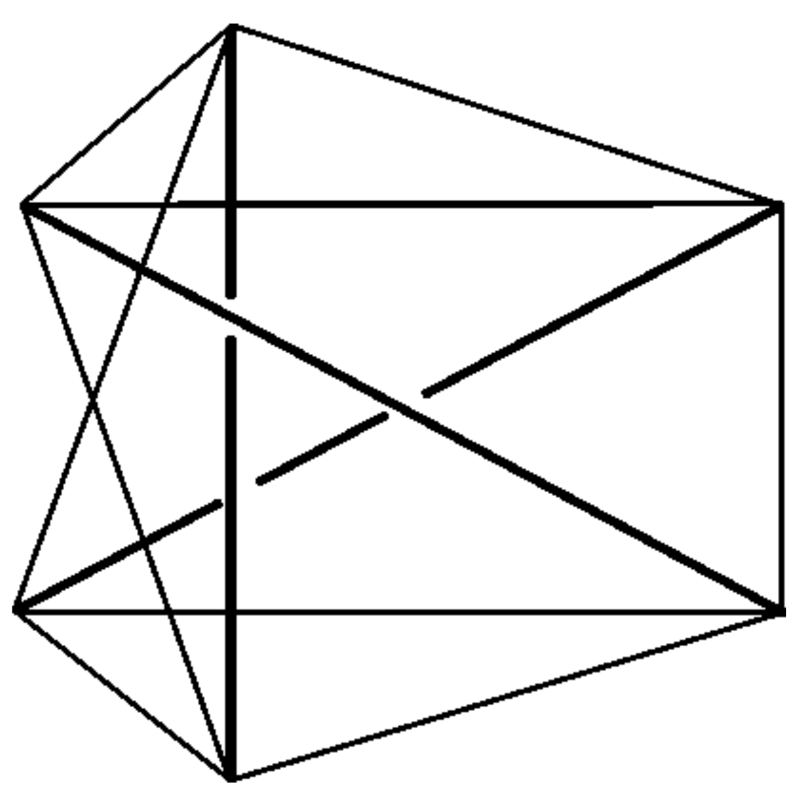
This connection was invented in the 1960s by the architect B. Fuller. After him, many different designs of this type appeared. When writing this book, the authors set the following task: to make a rigid spatial structure from rods and threads so that the rods do not touch each other and exactly two threads depart from each end of the rods. Such a connection was made by the architect V. Koleichuk. The connection diagram is shown in Figure 61.
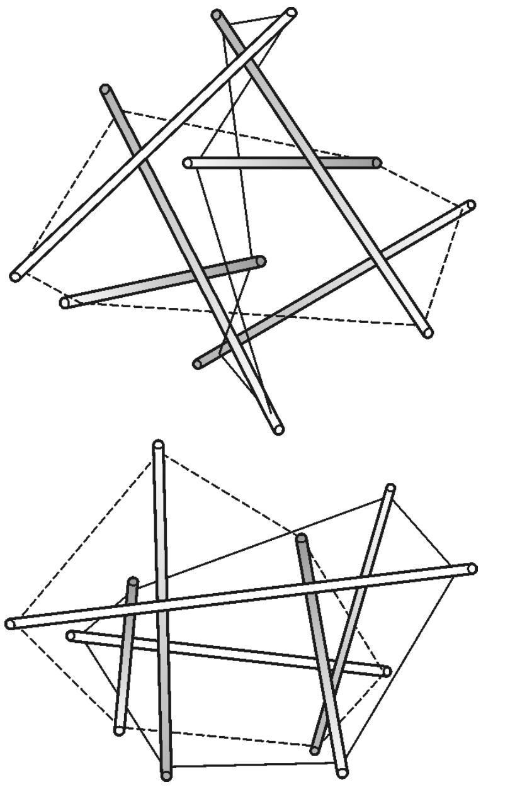
Architect, engineer, and designer Richard Buckminster Fuller gained the most fame thanks to his constructions called “geodesic dome”. He introduced the term “tensegrity” associated with them.
However, the architect Vyacheslav Koleichuk, who dealt a lot with such systems in the 90s of the last century, questioned the priority of B. Fuller. He argued that such systems were first invented by our domestic constructivist Karl Ioganson in 1921. A large number of modern studies are devoted to these systems with applications in interactive and adaptive structures.
In architecture, the term “tensegrity” was defined by B. Fuller as “the property of frame structures, in which whole parts loaded in tension and composite parts loaded in compression are involved, to work in such a way that each part functions with maximum efficiency and economy”.
Interestingly, the writer and anthropologist Carlos Castaneda (with the personal permission of B. Fuller!) used the term “tensegrity” to refer to a system of breathing, movements, and body positions developed by Indian shamans who lived in ancient Mexico, aimed at forming certain properties and qualities of a person engaged in this system. Thus, tensegrity according to Castaneda is a modernized version of some movements and breathing called “magical passes”.
The concept of “tensegrity” is also used in the study of processes in biology (especially in cell biology) and in some other industries, for example, in studies of the structure of textile fabrics, design, research of social structures, ensemble music and geodesy.
We especially note the application of the mathematical basis of this concept in chemistry. At the end of the 20th century, there was a great interest in fullerenes (of course, named after B. Fuller) or buckyballs. This is the name of molecular compounds belonging to the class of allotropic forms of carbon (Allotropy – the property of the existence of the same type of chemical element in the form of two or more simple substances that differ in structure and properties. For example, graphite and diamond are allotropic forms of carbon; other forms are diamond, carbyne and graphite) and representing convex closed polyhedra composed of an even number (three-coordinated) carbon atoms (this is the principle according to which the geodesic constructions of B. Fuller are built). At first, only structures were considered, including only pentagonal and hexagonal faces. According to Euler’s theorem for polyhedra, if \(n\), \(e\), and \(f\) are the number of vertices, edges, and faces of a polyhedron, respectively, then \(n - e + f = 2\). Using this theorem, it can be proved that a necessary condition for the existence of the polyhedron indicated above is the presence of exactly 12 pentagonal faces and \(\frac{n}{2} - 10\) hexagonal faces. In addition to carbon atoms, atoms of other chemical elements can also be included in the composition of fullerene molecules.
The possibility of the existence of fullerenes was predicted in 1971 in Japan, and theoretically substantiated in 1973 in the USSR. For the discovery of fullerenes, H. Kroto, R. Smalley and R. Curl were awarded the Nobel Prize in Chemistry in 1996. Currently, intensive study of these compounds continues.
Problem 5-13. Answer: it is possible.
Consider a cube \(ABCDA_1B_1C_1D_1\) with edge \(a\) (Fig. 62, a) and a spatial hexagon \(AA_1B_1C_1CD_1\) (its vertices do not lie in the same plane). It turns out that through this hexagon (and hence through the cube) it is possible to freely stretch a cube with edge \(a\) without touching its sides.
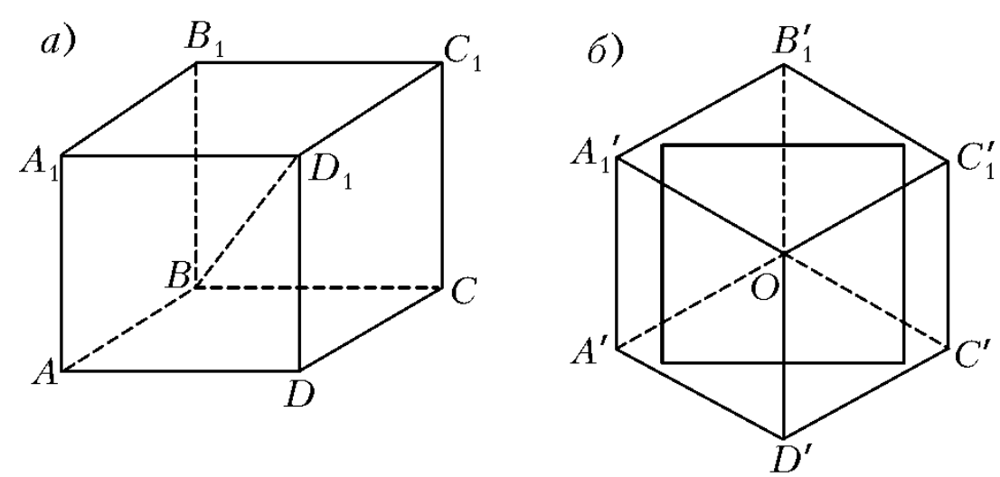
To verify this, let’s depict in Figure 62, b the projection of the cube onto a plane perpendicular to its diagonal \(BD_1\). Due to the symmetry of the cube, this projection is a regular hexagon \(A'A_1'B'C'C_1'D'\), where \(A'\) is the projection of the point \(A\), \(A_1'\) is the projection of the point \(A_1\), etc. Thus, the contour of the hexagon \(A'A_1'B'C'C_1'D'\) is the projection of the spatial hexagon \(AAB_1C_1CD_1\), and both ends of the diagonal of the cube \(BD_1\) are projected to the center \(O\) of the regular hexagon.
Since the sine of the angle between any edge of the cube and its diagonal is equal to \(\frac{\sqrt{2}}{3}\), the side of the regular hexagon is equal to \(a\frac{\sqrt{2}}{3}\), and the radius of the circle inscribed in it is equal to \(\frac{a\sqrt{2}}{2}\) – half the diagonal of the square with side \(a\). Therefore, a square with a center at point \(O\) and a side \(a\) will fit entirely in the hexagon without touching its sides, as shown in Figure 62, b.
From this it follows that if you put a cube with edge \(a\) so that its lower face coincides with the square in Figure 62, b, and move the cube perpendicular to the plane of the hexagon, then the cube will not touch the sides of the hexagon. This means that it can also be stretched through a spatial hexagon along the diagonal \(BD_1\).
Thus, a through hole can be made in a wooden cube through which the same cube can be stretched – see Figure 63.
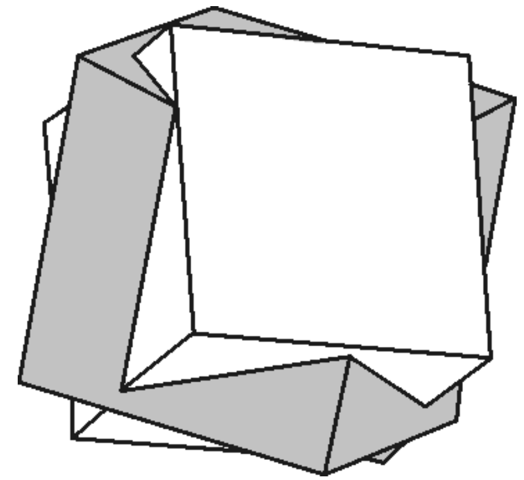
∇ From the above reasoning, it follows that through a cube with edge \(a\) it is possible to stretch even a cube of slightly larger dimensions than itself, namely any cube with an edge less than \((\sqrt{3} - 1)a\).
Problem 5-14. Answer: it exists.
Figure 64 shows an example of such a polyhedron. It is obtained as follows: on the edge \(BD\) of the tetrahedron \(ABCD\), a “notch” of two triangular faces – \(GEH\) and \(GFH\) – is made. It has 8 vertices, 6 faces, 12 edges.
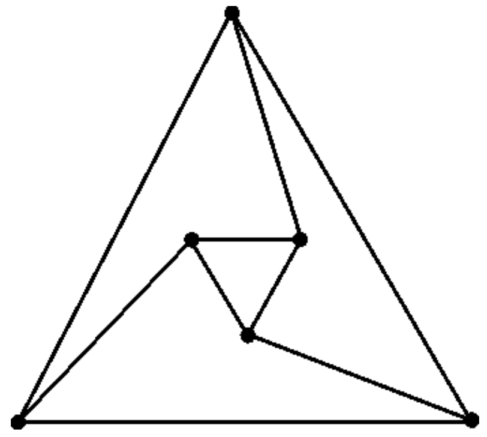
∇ In the polyhedron shown in Figure 64, two faces are hexagons with two common edges, \(BE\) and \(FD\). In a convex polyhedron, such a situation is impossible: two faces of a convex polyhedron can have no more than one common edge.
Problem 5-15. a) Answer: it is possible. An example is shown in Figure 65.
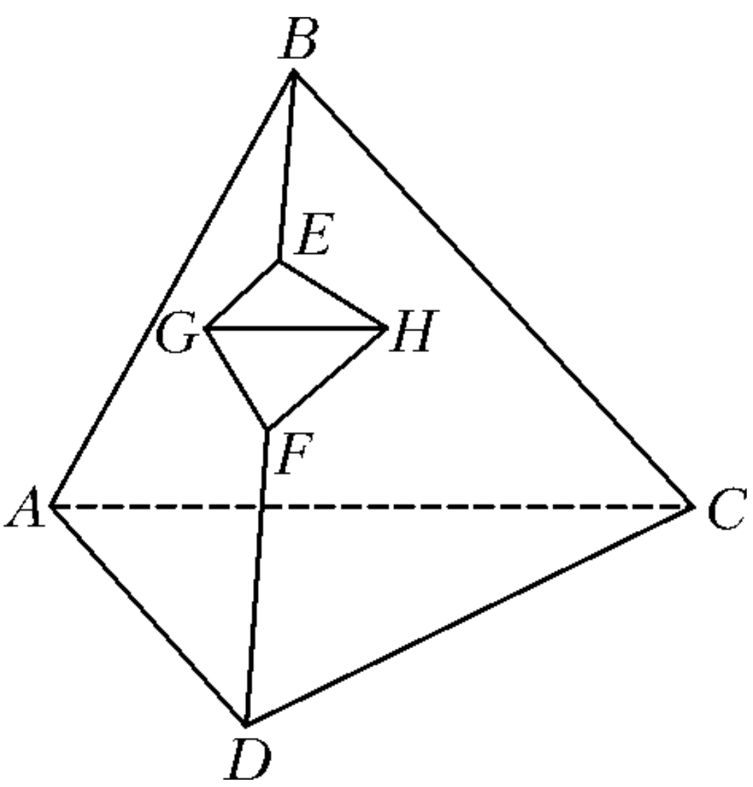
∇ This problem resembles the well-known problem “about houses and wells”: is it possible to draw nine non-intersecting roads on a plane that connect each of the three “houses” with each of the three “wells”? In this network of roads (as well as in problem 5-15) there are 6 vertices and 3 segments depart from each vertex (Fig. 66). However, the answer to the question “about houses and wells” is negative: such a network cannot be drawn. The reason for this fact is Euler’s theorem: let \(n\) be the number of vertices, \(m\) be the number of segments connecting some of these vertices, \(f\) be the number of polygons into which the plane is divided by these segments; then \(n + f = m + 1\) (see [92]).
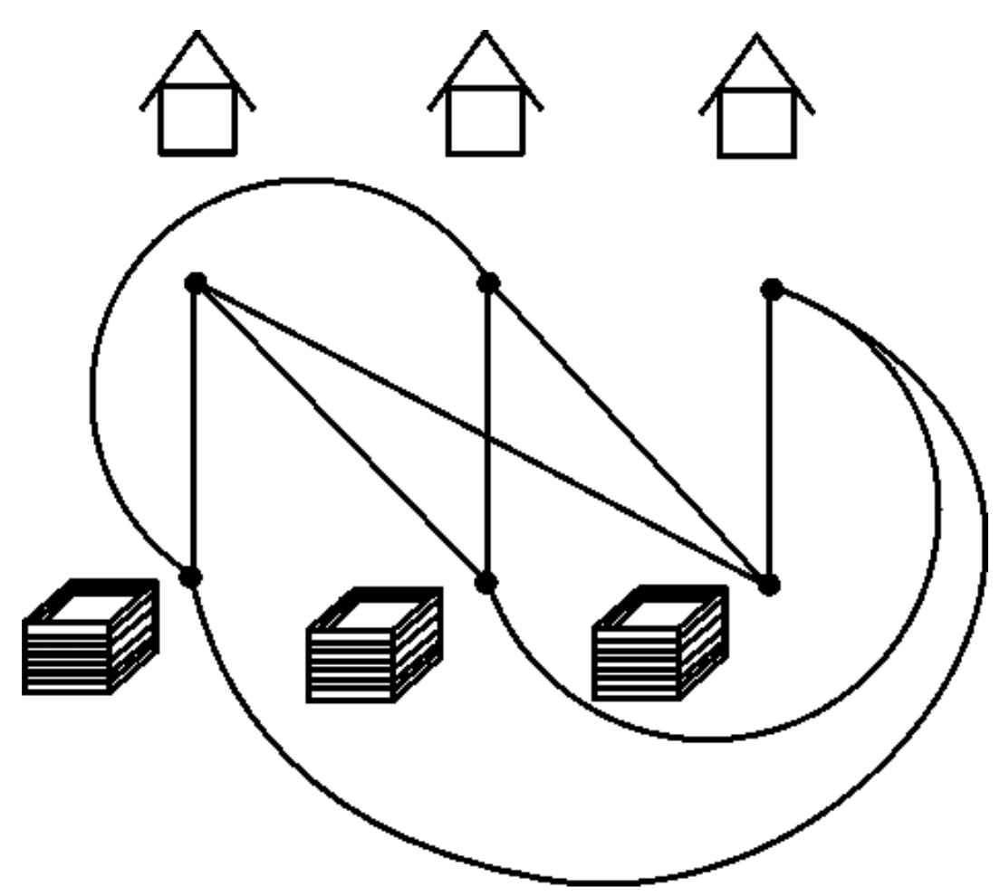
For connoisseurs. There is a theorem (Wagner, Fáry, Stein): if a graph can be depicted on a plane without intersections, then it can be depicted on a plane so that all its edges are segments. A necessary and sufficient condition for the planarity of a graph is the Pontryagin–Kuratowski theorem: a graph can be depicted on a plane without intersections if and only if it does not contain a subgraph homeomorphic to a graph with six vertices of the “houses – wells” type or a complete graph with five vertices (five points, pairwise connected by edges) (see [92]).
- Answer: it is possible.
The example is shown in Figure 67. It can be assumed that a wire octahedron is depicted here (Fig. 68), photographed from a point lying near the center of one of its faces.
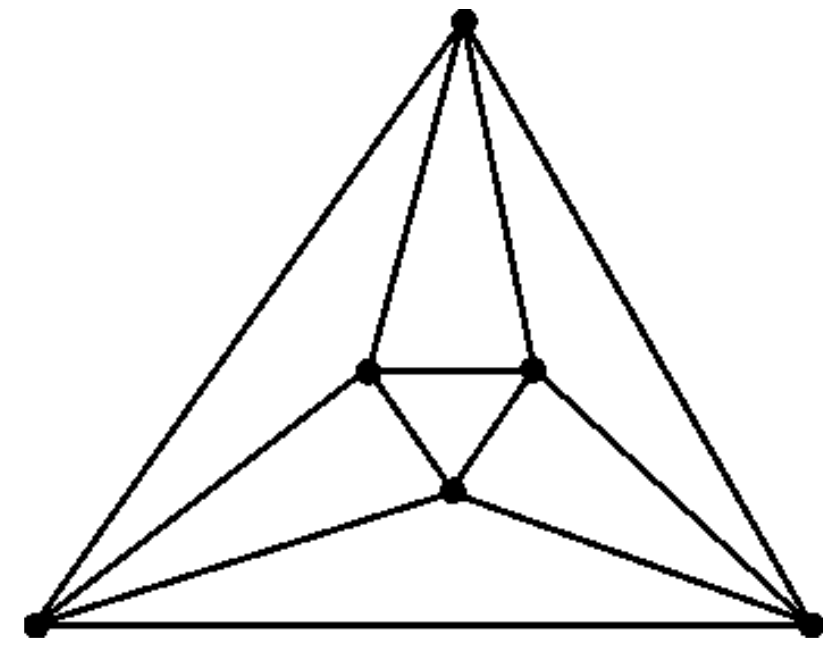
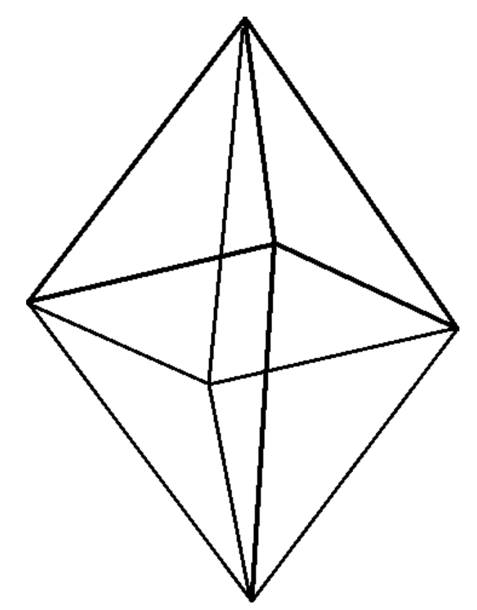
Problem 5-16. a) Answer: it exists. The example is shown in Figure 69.
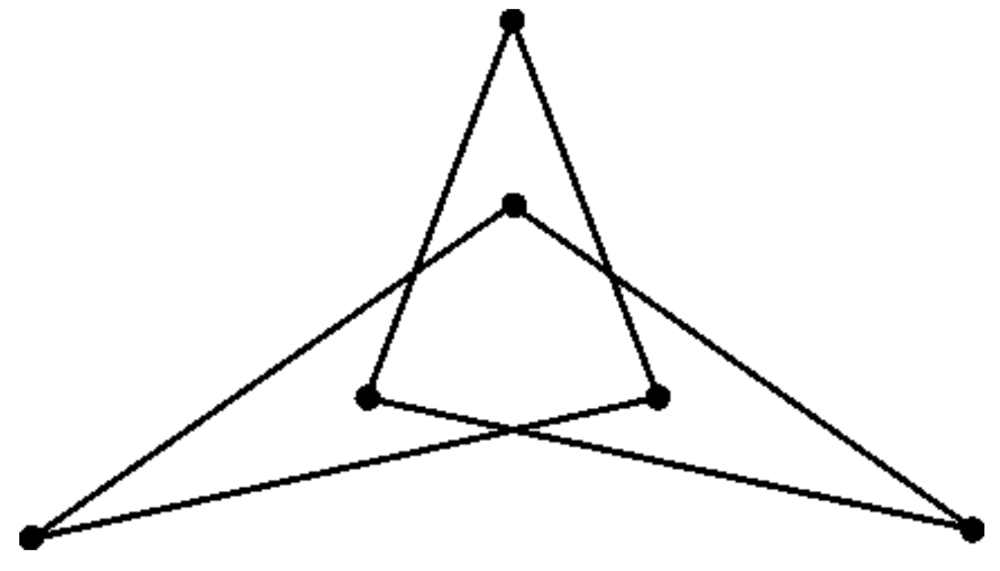
∇ For any even \(n \ge 6\), there exists a closed broken line of \(n\) links that intersects each of its links exactly once. An example for \(n = 6\) has already been constructed, and for \(n \ge 8\), Figure 70 shows the construction of part of such a broken line (the rule for constructing the rest is clear).
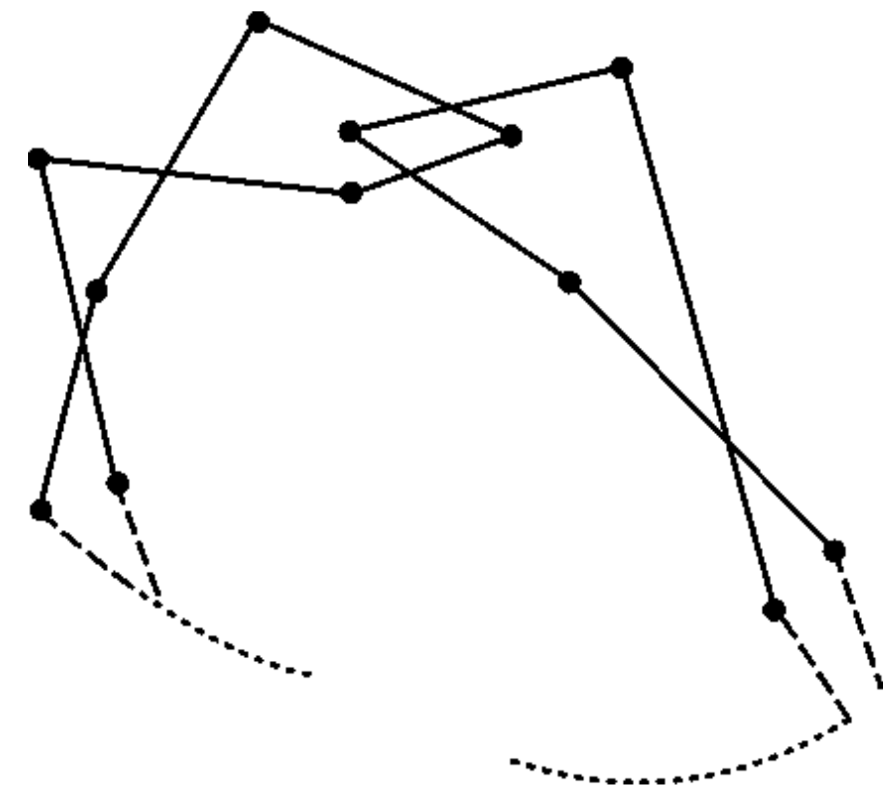
- Answer: it does not exist.
Suppose that we managed to construct such a broken line. Let’s consider any point of its self-intersection. Two links intersect at it, and they do not intersect with any other links. Therefore, all links of the broken line can be divided into pairs corresponding to the points of its self-intersection. This means that there is an even number of links and there cannot be seven.
∇ This reasoning shows that in general there is no broken line with an odd number of links that intersects each of its links exactly once.
Problem 5-17. Answer: a) it is possible; b) it is impossible.
- Figure 71, a shows how you can decompose 24 coins in the required way. Let’s explain how this is done.
Let the radius of the coins be \(R\). Let’s place the centers of four coins at the vertices of a rhombus with side \(2R\). From such rhombuses, you can type the desired patterns, joining them with extreme (located on a large diagonal) coins.
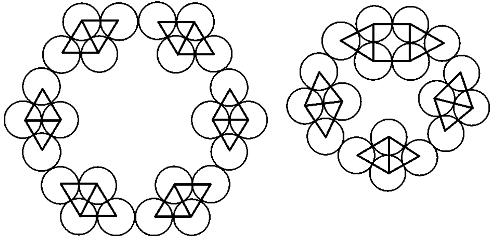
- Suppose that 25 coins are laid out on the plane in the required way, and we arrive at a contradiction.
Mark on the edge of each coin the three places where it touches the three others. Let’s count the total number of marked places in two ways. On the one hand, the number of marked places is even, since these places are divided into pairs at the points of contact of the coins. On the other hand, the number of marked places is odd, since it is equal to the number of coins 25 multiplied by 3.
The resulting contradiction proves our statement.
∇ It is interesting to find out for which \(k\) it is impossible to arrange a certain (finite) number of identical round coins on a plane so that each touches \(k\) of the others. It turns out that this cannot be done for \(k > 3\). Let’s prove it.
Suppose that identical round coins are laid out on a plane so that each of them touches \(k\) others. Mark the centers of all coins on the plane and consider their convex hull – the smallest convex polygon containing them. Let \(A\), \(B\), and \(C\) be three consecutive vertices of it; then the angle \(ABC\) is less than 180°. Let the coin centered at point \(B\) touch the coins centered at \(O_1\), \(O_2\), …, \(O_k\) (the centers are numbered in the order of traversal around point \(B\) in one of the two possible directions). It is easily shown that each of the angles \(O_1BO_2\), \(O_2BO_3\), …, \(O_{k-1}BO_k\) is not less than 60°. From this it follows that the inequality \(k \cdot 60° \le 180°\) must be satisfied, which implies that \(k \le 3\).
Let’s now show how, for \(k = 3\), it is possible to decompose any sufficiently large even number of coins in the required way. For this, it is convenient to use blanks of two types: a “rhombus” of four coins and a “flashlight” of six coins.
It is easy to assemble a chain of 16 coins from four “rhombuses”. Figure 71, b shows how these “rhombuses” and “flashlights” can be folded into a closed chain containing 18 coins. Any larger even number can be represented as a sum of \(4n + 6m\) and assemble the corresponding chain from \(n\) “rhombuses” and \(m\) “flashlights”.
Similar questions about the arrangement of balls in space are interesting. In 1953, it was proved that no more than 12 identical balls can be attached to a ball in space [116].
Problem 5-18. Answer: it can.
Let’s assign a point to each person, and different points to different people. If two people know each other, then we connect the corresponding points with a segment. Then the problem will be reduced to the following: is there a diagram that does not have triangles, and any two points are either connected by a segment or are opposite vertices of exactly one quadrilateral?
Figure 72, a, b shows two simplest examples of such schemes. We need to give an example of a scheme consisting of more than four points. Figure 72, c shows an example of a scheme of 16 points and 40 segments that satisfies the condition. The resulting scheme satisfies the condition of the problem. This can be verified by enumeration, which is simplified due to the symmetry of the scheme.
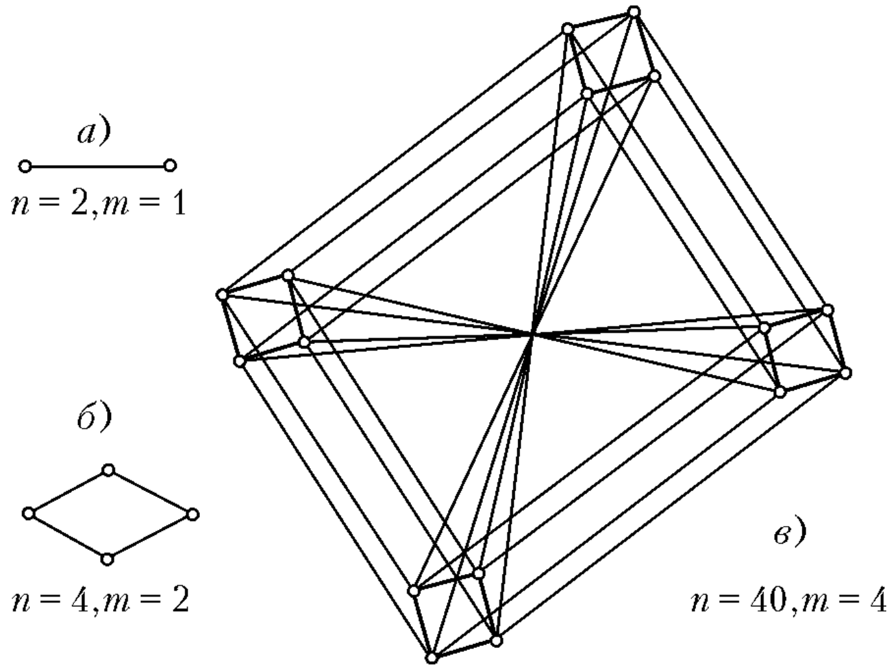
∇ It is interesting that the configuration described in the solution of problem 5-18 can be described as a set of vertices, edges, and large diagonals of a four-dimensional cube.
It can be shown that under the conditions of problem 5-18, each person in a given company has the same number of acquaintances. Indeed, let for each person \(A\), \(M_A\) denote the set of his acquaintances, and \(N_A\) denote the set of people unfamiliar with \(A\). Then each element from \(N_A\) can be associated with a pair of elements from \(M_A\) (those with whom he is familiar). It is not difficult to prove that the correspondence between the set \(N_A\) and the set of all possible pairs of elements of \(M_A\) will be one-to-one. Therefore, if \(M_A\) contains \(m_A\) elements, then \(N_A\) contains \(\frac{1}{2}m_A(m_A - 1)\) elements, and in total, the company will have \(n = 1 + m_A + \frac{1}{2}m_A(m_A - 1)\) people. This equality holds for any person \(A\).
But the equation \(1 + x + \frac{1}{2}x(x-1) = n\) has (for \(n > 1\)) only one positive root, so the number \(m_A\) is the same for all \(A\) (see [10]).
We do not know the complete answer to the question of for which values of \(n\) such companies exist. As shown above, \(n = 1 + \frac{m(m+1)}{2}\), where \(m\) is the number of acquaintances of one person. It is not difficult to prove that such companies do not exist for \(m = 3\), \(m = 4\), and for \(m = 4k + 3\), where \(k\) is any natural number. All examples of such companies known to us are shown in Figure 72, a, b, c.
Problem 5-19. Answer: it could.
Figure 73 schematically shows the results of all games of the chess players’ tournament, satisfying the condition of the problem. In it, each pair of chess players
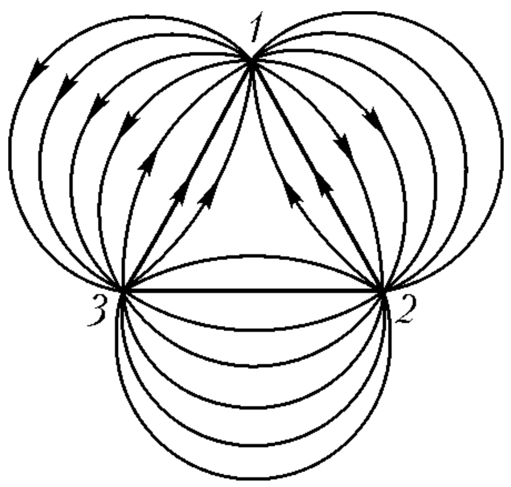
played 7 games. In this case:
– the first one won two games against the second one; – the second one won two games against the first one; – the first one won three games against the third one; – the third one won four games against the first one; – the rest of the tournament games ended in a draw.
In this tournament, the first chess player scored 6.5 points, the second one – 7 points, the third one – 7.5 points; at the same time, the first one won the most – 5 games, the second one lost the least – 2 games, and the third one scored the most points.
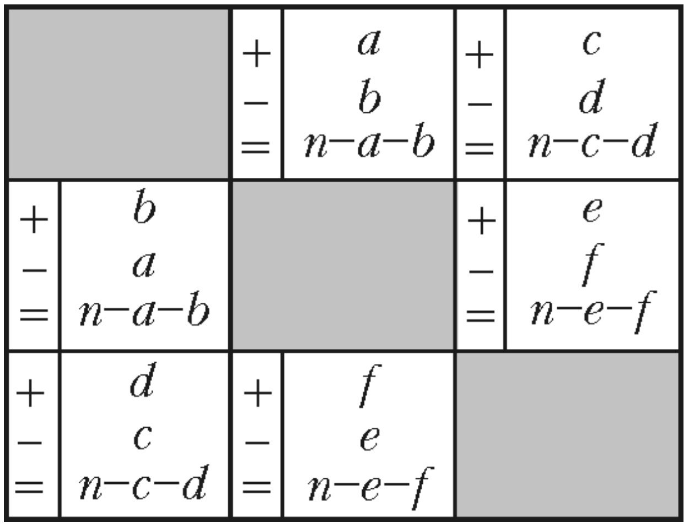
∇ You can make a tournament table (Fig. 74): denote all the number of wins (+), losses (–), and draws (=) with letters and write down all the conditions of the problem. This will result in a system of linear inequalities with a large number of variables. The solution of problem 5-19 shows that this system has at least one solution in natural numbers. Of course, it is not unique; it is interesting to obtain a description of all solutions. For a detailed discussion of this problem, see [39, 40].
Problem 5-20. Answer: it is possible. The filling method is shown in Figure 75, different colors are shown in this figure with different hatching.
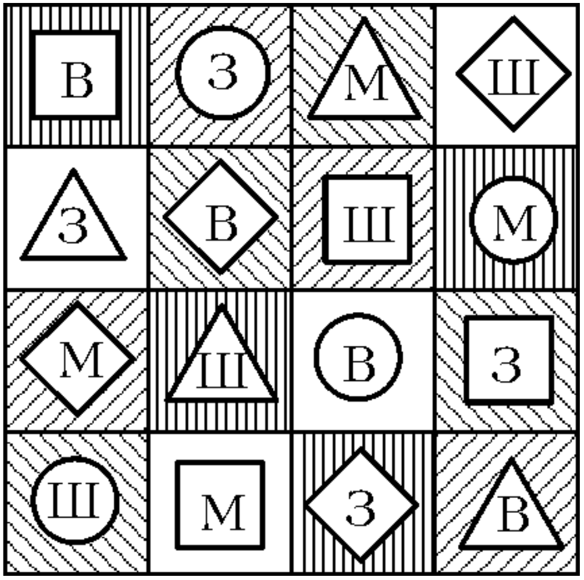
∇ When \(n\) different symbols are written in an \(n \times n\) table so that all different symbols are in each row and each column, it is said that a Latin square is given. Two Latin squares \(A\) and \(B\) are called orthogonal if in those cells where the \(i\)-th symbol is in square \(A\), all symbols are different in square \(B\) (and so for each (\(i = 1, 2, ..., n\)).
Our task was to construct three pairwise orthogonal Latin squares \(4 \times 4\) (one gives the color, the second – the shape of the frame, and the third – the letter).
For connoisseurs. To compile similar square tables (they are useful in applied problems, for example, in planning multi-purpose experiments), it is convenient to use the concept of a finite affine plane (see [42]).
Let \(F\) be a finite field of \(q\) elements; pairs \((x; y)\) of elements of \(F\) will be called points of the finite affine plane, and sets of the form \(\{(x;y): ax + by + c = 0\}\), where \(a\), \(b\), \(c \in F\), and \(a\) or \(b\) is not equal to zero, are called lines.
In total, there are \(q^2\) points and \(q(q + 1)\) lines, and they are divided into \(q + 1\) families so that in each family there are exactly \(q\) lines “parallel” to each other, and \(q + 1\) lines pass through each point.
For example, one family is the lines \(x + c = 0\), another is \(y + c = 0\), the third is \(x + y + c = 0\), the fourth (if \(q > 2\)) is \(x + 2y + c = 0\), and so on.
Let’s assign a certain property to each of the \(q + 1\) families: “column number”, “row number”, “letter”, “frame shape”, etc. Let’s assign a certain row number to the points of each of the \(q\) lines of the first family, a certain column number to the points of each of the lines of the second family, a letter to the third, a frame shape to the fourth, and so on. Then we will get a way to find out in which cell of the table \(q \times q\) to place each point \((x; y)\), what color to assign to it, what letter, etc. Any two non-parallel lines intersect at one point, so that for any two given properties there is exactly one cell with the desired pair of properties.
For \(q = 4\), there is a finite field of elements 0, 1, \(a\), \(b\), leading precisely to the solution of our problem. The addition and multiplication tables in this field are given below.
| + | 0 | 1 | a | b |
|---|---|---|---|---|
| 0 | 0 | 1 | a | b |
| 1 | 1 | 0 | b | a |
| a | a | b | 0 | 1 |
| b | b | a | 1 | 0 |
| × | 0 | 1 | a | b |
|---|---|---|---|---|
| 0 | 0 | 0 | 0 | 0 |
| 1 | 0 | 1 | a | b |
| a | 0 | a | b | 1 |
| b | 0 | b | 1 | a |
It can be shown that there are no more than \(n - 1\) pairwise orthogonal Latin squares of order \(n\). Moreover, the existence of \(n - 1\) such squares is equivalent to the existence of a projective plane of order \(n\) (see the solution of the next problem 5-21 about the projective plane). If \(n\) is a prime number or a power of a prime number, then a projective plane of order \(n\) exists. For other \(n\), the existence of a projective plane of order \(n\) is an unsolved problem.
In 1782, Leonhard Euler proposed the following problem.
Is it possible to arrange 36 officers of six different ranks, taken from six different regiments, in the form of a \(6 \times 6\) square so that each row and each column contains officers of each rank and from each regiment?
In other words, L. Euler asked if there are two orthogonal Latin squares of order 6.
It can be shown that if \(n\) does not give a remainder of 2 when divided by 4, then two orthogonal squares of order \(n\) exist. L. Euler suggested that if \(n\) gives a remainder of 2 when divided by 4, then there are no such squares.
For \(n = 2\), Euler’s hypothesis is easy to verify, so \(n = 6\) is the first difficult case. In 1900, Tarry verified the indicated hypothesis in this case, listing all Latin squares of order 6. The book [133] provides a proof of Euler’s hypothesis for \(n = 6\), and it is not based on complete enumeration.
It turned out that for \(n > 6\), Euler’s hypothesis is incorrect. In 1959, Parker found two orthogonal Latin squares of order 10, and a year later his construction was generalized, and a pair of Latin squares of order \(n\) was constructed for all \(n \equiv 2 (\text{mod } 4)\), except, of course, \(n = 2\) and \(n = 6\).
Almost nothing is known about three pairwise orthogonal Latin squares. The first unresolved case is \(n = 10\).
Problem 5-21. a) Answer: 4 or 6 lessons.
It follows from the condition that the members of the club go to the cafe either in pairs or in threes.
If they went in pairs every time, then there were 6 lessons. Indeed, if we number the participants with numbers from 1 to 4, then they could only go to the cafe in the following combinations: (1 2), (1 3), (1 4), (2 3), (2 4), (3 4).
If, however, there was at least one visit to the cafe in threes, then, in addition to it, there were only three visits: each of these three could only go to the cafe with the fourth one.
- Answer: there can be schedules of two types: (1 2 3 4 5 6), (1 7), (2 7), (3 7), (4 7), (5 7), (6 7) or (1 2 3), (1 4 7), (1 5 6), (2 5 7), (2 4 6), (3 6 7), (3 4 5).
These situations can be depicted graphically. Figure 76, a shows the first schedule: the horizontal line corresponds to the first visit to the cafe, and the lines connecting point 7 with other points correspond to the rest of the visits.
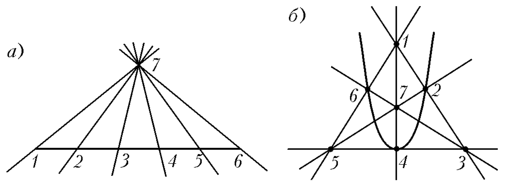
The second of the given schedules is illustrated by Figure 76, b. Each line in this figure shows one visit; the numbers of the points through which it passes show the composition of the students who visited the cafe this time.
∇ The following general questions are related to this problem.
Let \(m\) different subsets, different from \(E\) itself, be distinguished in the set \(E\) of \(n\) elements, so that for any two elements from \(E\) there is exactly one of the selected subsets containing both of these elements.
Can it be that \(m < n\)? When is equality \(m = n\) possible? (See [84], ch. III, § 5, exercise. 12.)
For connoisseurs. Let’s prove that always \(m \ge n\). Let’s number all the selected subsets: \(A_1\), \(A_2\), …, \(A_m\) and the elements of the set \(E\): \(a_1\), \(a_2\), \(a_3\), …, \(a_n\).
We assign an \(m\)-dimensional vector \(a_i = (\lambda_{i1}, \lambda_{i2}, ..., \lambda_{im})\) to each element \(a_i\) in the following way: \(\lambda_{ij} = 0\) if the element \(a_i\) is not included in the set \(A_j\); \(\lambda_{ij} = 1\) if this element is included in \(A_j\).
It follows from the condition that the scalar product of any two such vectors is equal to 1, i.e., \((a_i, a_j) = 1\) for \(i \ne j\), and the scalar square of the vector is not less than 2 (since each element is included in at least 2 sets).
Now suppose that \(m < n\). Since the number \(n\) of vectors \(a_i\) is greater than the dimension of the space \(m\), the system of vectors \(a_1\), \(a_2\), …, \(a_n\) is linearly dependent, i.e., the equation \(x_1 a_1 + x_2 a_2 + ... + x_n a_n = 0\) has a non-zero solution. Sequentially multiplying both sides of this equation scalarly by the vectors \(a_1\), \(a_2\), …, \(a_n\), we obtain a system of linear equations of the form
\(b_1 x_1 + x_2 + ... + x_n = 0\), \(x_1 + b_2 x_2 + ... + x_n = 0\), … \(x_1 + x_2 + ... + b_n x_n = 0\),
where all \(b_i \ge 2\). But this system has only a zero solution (its determinant is different from zero), which contradicts our assumption. Thus, \(m \ge n\).
For the equality \(m = n\) to hold, it is necessary and sufficient that one of the following two cases takes place:
all elements of \(E\), except for one, are included in one of the selected subsets, and the remaining selected subsets consist of pairs formed by this remaining element and all the others;
the number \(n\) is represented as \(l(l-1) + 1\), each selected subset consists of \(l\) elements, and each element of the set \(E\) belongs to exactly \(l\) subsets.
Note that the question of when case 2) is realized is not solved. The system of subsets of the set \(E\) from the generalization ∇, satisfying condition 2), has a special name: a finite projective plane of order \(q = l - 1\).
Let’s show how to construct a finite projective plane of order \(q = p^k\) (for \(n = p^{2k} + p^k + 1\)), where \(p\) is a prime number. To do this, you need to use “numbers” from a finite field of order \(p^k\).
We call a triple of “numbers” \((x_1, x_2, x_3)\), considered up to proportionality (i.e., the triples \((x_1, x_2, x_3)\) and \((cx_1, cx_2, cx_3)\) define the same point), a point of our plane. We agree not to consider the triple \((0; 0; 0)\) as a point. A line is given by a triple of “numbers” \((a_1, a_2, a_3)\) (except for the triple \((0; 0; 0)\)), considered up to proportionality. The point \((x_1, x_2, x_3)\) belongs to the line \((a_1, a_2, a_3)\) if and only if \(a_1 x_1 + a_2 x_2 + a_3 x_3 = 0\).
It is clear that the constructed projective plane implements case 2). In this case, the points of the plane are the elements of the set \(E\), the lines are the selected subsets. The number of points and the number of lines are the same, and any two points belong to only one line.
For \(q = 2\), we get exactly the same example of a projective plane of order 2, which is shown in Figure 76, b.
In paragraph b) of problem 5-21, the required system of sets was constructed for the case \(l = 3\), \(n = 7\).
More details about finite projective planes are written, for example, in the article [132].
Problem 5–21 can be reformulated in the following equivalent form.
If \(n\) subsets are selected in a set \(X\) of \(m\) elements, any two of which have exactly one common element, then \(m \ge n\). (\(X\) is the set of visits to the cafe; for each member of the club \(a\), we select the set of all visits that included \(a\).)
This formulation allows a natural generalization.
Given a natural number \(\lambda\) and a set \(X\) of \(m\) elements, in which \(n\) subsets are selected, any two of which have exactly \(\lambda\) common elements. Then \(m \ge n\).
Proof. Let \(Y\) be the set of all selected subsets of the set \(X\). If \(|A| = \lambda\) for some \(A \in Y\), then \(A\) must be a subset of any \(B \in Y\). If we remove \(A\) from \(X\) and from each \(B\), we get a partition of the set \(X \setminus A\) into \(n\) pairwise disjoint subsets. The number of such subsets is maximum if one of them is empty, and all the others are single-element. Since \(|X \setminus A| = m - \lambda\), we get that
\(n \le m - \lambda + 1 \le m\).
Suppose that \(|A| > \lambda\) for each \(A \in Y\). Let \(X = \{1, 2, ..., m\}\). Consider all possible linear polynomials
\(f(z_1, z_2, ..., z_m) = a_0 + a_1 z_1 + a_2 z_2 + ... + a_m z_m\)
with real coefficients \(a_0\), \(a_1\), …, \(a_m\). They form a vector space of dimension \(m + 1\). For each subset \(P\) of the set \(X\), we introduce \(f(P) = f(\alpha_1, \alpha_2, ..., \alpha_m)\), where \(\alpha_i = 1\) if \(i \in P\), and \(\alpha_i = 0\) if \(i \notin P\). For example, \(f(\emptyset) = a_0\), \(f(X) = a_0 + a_1 + ... + a_m\).
For each \(A \in Y\), consider the polynomial \(f_A = -\lambda + \sum_{i \in A} z_i\). Then \(f_A(P) = -\lambda + |A \cap P|\) for any subset \(P\) of the set \(X\). Therefore, if \(A, B \in Y\), then \(f_A(B) = 0\) for \(A \ne B\) and \(f_A(A) = |A| - \lambda > 0\). This implies that the \(n\) polynomials \(f_A\), \(A \in Y\), are linearly independent.
Indeed, if \(\sum_{A \in Y} \alpha_A f_A = 0\) for some real coefficients \(\alpha_A\), then \(\sum_{A \in Y} \alpha_A f_A (B) = 0\) for any \(B \in Y\) and, therefore, \(\alpha_B = 0\). Moreover, no linear combination of polynomials \(f_A\), \(A \in Y\), is equal to 1.
Indeed, if \(\sum_{A \in Y} \alpha_A f_A = 1\) for some real coefficients \(\alpha_A\), then \(\sum_{A \in Y} \alpha_A f_A (B) = 1\) for any \(B \in Y\) and, therefore, \(\sum_{A \in Y} \frac{\alpha_B}{B - \lambda} = 1\), which is impossible, since the constant term of each polynomial \(f_A\) is negative, and therefore the constant term of the left-hand side of the last equality must be negative.
So, the polynomials \(f_A\) and the constant polynomial 1 are linearly independent. Therefore,
\(n + 1 \le m + 1 \Rightarrow n \le m\).
What happens if \(m = n\)?
If all sets \(A \in Y\) consist of the same number of elements, then the corresponding structure is called a symmetric \((m, k, \lambda)\)-design.
A projective plane of order \(n\) is a symmetric \((n^2 + n + 1, n + 1, 1)\)-design.
Example. Let’s number the vertices of the graph shown in Figure 72, c, with the numbers 1, 2, 3, …, 16. If \(i\) is any of these numbers, then let \(A_i\) be the set consisting of the vertex \(i\) and its five neighbors. Then \(|A_i \cap A_j| = 2\) for any two different \(i\) and \(j\), so that we get a symmetric \((16, 6, 2)\)-design.
If not all sets \(A \in Y\) consist of the same number of elements, then, according to the Ryser–Woodall conjecture, all sets \(A \in Y\), except for one, consist of the same number of elements. By 2011, this conjecture has been proven for \(m = p + 1\); \(m = 2p + 1\); \(m = 3p + 1\); \(m = 4p + 1\); \(m = 6p + 1\), where \(p\) is a prime number, and also for \(\lambda < 60\) for any \(m\).
You can learn about the current state of the theory of symmetric designs and the Ryser–Woodall conjecture from the monograph [133], which was mentioned in the solution of the previous problem 5-20.
5.2 Independent Practice Problems
5-22. a) Is it possible to create a square table 100 × 100 of numbers so that the sum of the numbers in each column is positive, and the sum of the numbers in each row is negative? b) Is it possible to arrange 25 numbers in a square table of size 5 × 5 cells so that the sum of four numbers in each 2 × 2 square is negative, and the sum of all 25 numbers is positive?
5-23. Several people watched a snail for 7 hours. Each observed it for exactly 1 hour and noticed that during this hour the snail crawled exactly 1 meter (although it crawled unevenly, with stops). Could the snail crawl during these 7 hours: a) more than 7 meters; b) more than 12 meters; c) less than 5 meters; d) less than 4 meters?
5-24. a) Is it possible to represent the number 123 as a product of several natural numbers so that the sum of the squares of these numbers is also equal to 123? b) The same question regarding the number 456.
5-25. Is it possible to place on a straight line: a) 6; b) 7 segments so that each point of their union contains no more than three segments and any two of any three segments intersect?
5-26. 15 strangers entered a bus without a conductor. Each of them has only silver coins in denominations of 10, 15, and 20 kopecks. The ticket costs 5 kopecks. a) Could it be that all passengers paid correctly for the fare, taking change from each other? b) Prove that if passengers have less than 19 silver coins, then they will not be able to pay correctly for the fare. c) Prove that if all passengers have less than 2 rubles 50 kopecks, then they will not be able to pay.
5-27. a) Dresses of two colors and two styles were brought to the store. Prove that for the window you can choose two dresses that differ from each other in both color and style. b) Dresses of three colors and three styles were brought to the store. Is it possible to choose three dresses for the window so that all three colors and three styles are presented?
5-28. The sum of several numbers is 1. Can the sum of their squares be: a) less than 0.01; b) greater than 100?
5-29. Are the following statements true: a) if in triangles \(ABC\) and \(A_1B_1C_1\), \(AB = A_1B_1\), \(BC = B_1C_1\), and \(\angle A = \angle A_1\), then the triangles are equal; b) if three angles and two sides of one triangle are equal to three angles and two sides of another triangle, then such triangles are equal; c) if the bases and lateral sides of one trapezoid are respectively equal to the bases and lateral sides of another trapezoid, then such trapezoids are equal?
5-30. Could it be that: a) the lengths of all three bisectors of a triangle are less than 1 cm, and its area is greater than 1 cm\(^2\); b) the lengths of all three bisectors of a triangle are greater than 100 cm, and its area is less than 1 cm\(^2\)?
5-31. How many sides can a planar polygon have, which is: a) the intersection; b) the union of a triangle and a convex quadrilateral?
5-32. Is it possible to fold a square from four tiles of size 1 × 1, eight tiles of size 2 × 2, twelve tiles of size 3 × 3, and sixteen tiles of size 4 × 4?
5-33. a) Is it possible to cut any scalene triangle into two equal ones? b) Is it possible to cut a square into several obtuse triangles? c) How to cut a triangle with angles 15°, 105°, and 60° into isosceles triangles? d) Can any triangle be cut into several isosceles triangles?
5-34. Can any triangle fit inside a circle whose radius is less than the radius of the circle circumscribed around this triangle?
5-35. A quadrilateral with perimeter \(P_1\) is located on a plane inside a quadrilateral with perimeter \(P_2\). Could it be that: a) \(P_1 > P_2\); b) \(P_1 > 2P_2\)?
5-36. Is it possible to draw a closed broken line on a plane that intersects each of its links: a) 3 times; b) \(n\) times, if the intersection points of the links of the broken line should not coincide with its vertices and no more than two links should pass through any one intersection point?
5-37. Is it possible to arrange on a plane: a) 12; b) 13 points and connect them with non-intersecting segments so that each point is connected to five others?
5-38. Choose four triples of non-negative integers so that each integer from 1 to 81 can be represented as the sum of four numbers – one from each triple.
5-39. Does there exist an increasing geometric progression in which the first 100 terms are integers, and all other terms are not integers?
5-40. Can the numbers 7, 8, 9 be members (not necessarily adjacent) of the same geometric progression?
5-41. a) It is required to connect a chandelier with seven bulbs to the network so that it is possible to light any number of bulbs from one to seven. Can this be done if only three switches are allowed? b) The same question about a chandelier with eight bulbs.
5-42. The head of the math club gave 20 problems as homework. At the next lesson, it turned out that each member of the club solved exactly two problems, and each problem was solved by exactly two participants. a) How many members were in the club? b) Can the head of the club organize a discussion of all the problems in such a way that each participant tells the solution to one of the problems they solved? c) Prove that there are at least two ways to organize a discussion of problems in this way, and give an example of a situation where there are exactly two of these ways. d) What can be the number of ways to organize such a discussion of problems?
5-43. Among 25 officers, there are equal numbers of infantrymen, artillerymen, tankers, signalmen, and pilots, and, in addition, equal numbers of generals, colonels, majors, captains, and lieutenants, with each of the five branches of the military represented by officers of all five ranks. Arrange these officers in a 5 × 5 square so that officers of all branches of the military and all ranks meet in each column and each row.
5-44. One triangular pyramid is located inside another triangular pyramid. a) Can the sum of the lengths of all edges of the inner pyramid be greater than the sum of the lengths of the edges of the outer? b) Can the total surface area of the inner pyramid be greater than the total surface area of the outer?
5-45. Is it possible to wrap a cube with an edge of 1 cm in a square piece of paper with a side of 3 cm? 5-46. Does there exist an irregular tetrahedron in which five dihedral angles are equal to \(\alpha\)? If so, what is its sixth dihedral angle?
5-47. Is it possible to place 8 tracking stations on a planet shaped like a sphere with a diameter of 1 so that any body located at a height of 1 above the planet’s surface is visible from at least two stations?
5-48. a) Come up with an example of a convex polyhedron in which all faces are parallelograms, but it is not a parallelepiped. b) Let the number of different directions of the edges of such a polyhedron be equal to \(k\). How many faces does it have?
5-49. a) Given a polynomial of two variables \(P(x, y) = x^2 + (x + y + 1)(x + y)\). Let’s create a table of its values for non-negative integers \(x\) and \(y\). Prove that each non-negative integer will occur in this table once. b) Come up with such a polynomial \(Q(x, y, z)\) of three variables so that among its values for non-negative integers \(x\), \(y\), \(z\), each non-negative integer occurs once.
5-50. Does there exist a polynomial \(P(x, y)\) whose set of values is the set of all positive numbers?